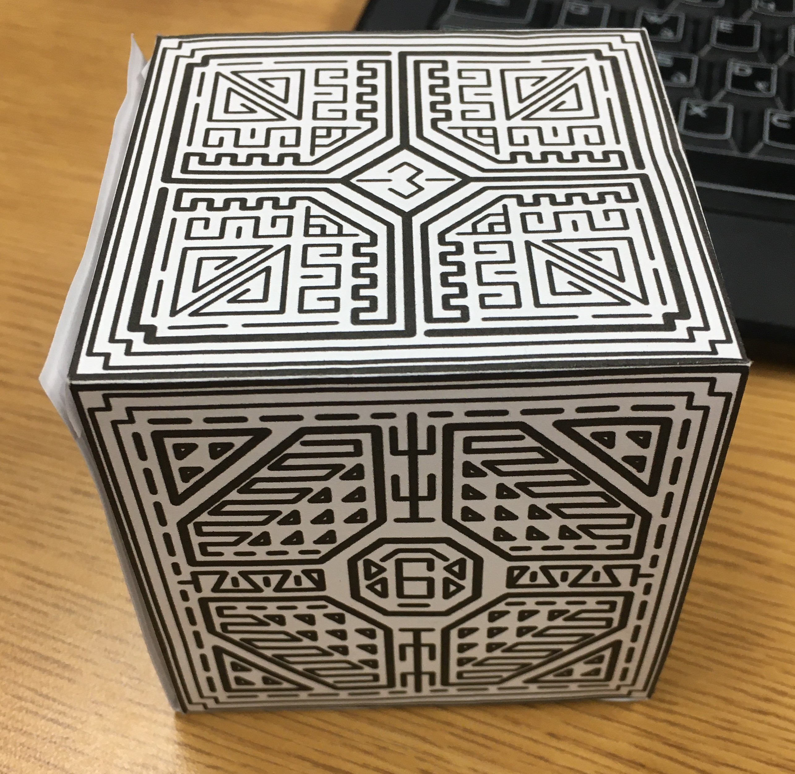
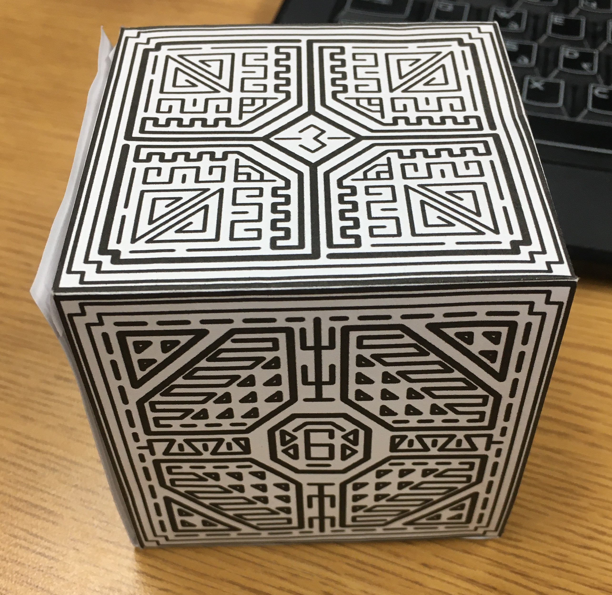

This game was part of an assignment to create a singleplayer, 2D platformer by myself. This was my first forray into game development requiring me to learn how to program and develop my art and animation skills.
I created all the assets, animations and wrote the code for this project over the course of about four to five weeks. In addition to making a singleplayer game, I needed to animate a roughly twenty second trailer to play at the start.
Overall this project was a massive learning oportunity for me, required me to adapt and learn new skills on the fly. I learned how to use a multitude of software programs, most of them for the first time so this was a big learning opportunity.

 
